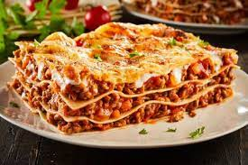

Lasagna

Here's how you can make a tasteful lasagna
You are going to need all the ingredients below. If you follow the instructions on the "Steps" section, you are absolutely going to cook an awesome lasagna.
Ingredients
- Tomato
- Pasta or whatever it is called in english
- 7kg of meat
- 10kg of your favourite cheese
- Cook the meat in the oven
- Put everything in the lasagne container
- Put it in the oven
- And shove ir up your butt
- In case you didn't get it, watch The Office until you get it ;)